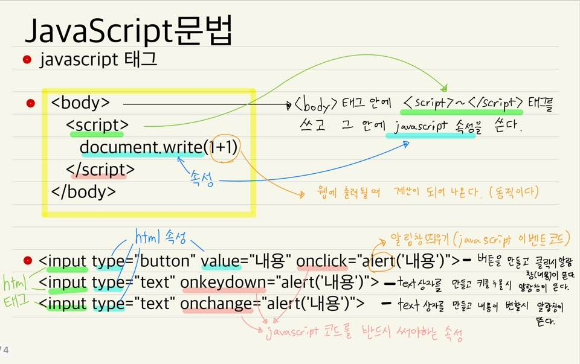

JavaScript
코딩하는 방법 배우기
Atom과 JavaScript을 사용해서 홈페이지를 만들어 보자.
생활코딩의 유튜브를 보고 열심히 배워보자.
이 부분 역시 자바를 공부하게 되면 채워나가도록 하겠다.
자바스크립트
자바스크립트란?
- 사용자와 상호작용하는 것을 하는 언어다
- Html을 제어하는 언어다. (웹페이지를 동적으로 만들어줌)
JavaScript태그
- 자바스크립트 태그는 < body>~< /body>태그 안에 < script>~< /script>라는 태그를 사용한다.
- < script>~< /script>태그 안에는 자바스크립의 속성을 쓴다.
JavaScript이벤트

- onclick, onkeydown, onchange 등은 반드시 자바스크립트 코드를 써야하는 속성이다. (사진 참조)
JavaScript콘솔(Console)
- 자바스크립트를 실행시키기위해 새 창을 만드는 것이 아니라 검사창에 console을 이용한다.(간단한 연산 또는 데이터 처리를 위해)
- 웹브라우저의 검사창에서 console창을 열고 간단한 자바스크립 언어를 사용할 수 있다.
- 검사창에 element에서 esc를 누르면 하단에 콘솔창이 뜬다.
JavaScript데이터타입
- 숫자 데이터타입(Number)
- 숫자는 1,2,3,4... 숫자로 나타내면 된다.
- 이항연산자 중 산술연산자(+,-,*,/등 등) 등이 있다.
- 문자 데이터타입(String)
- 큰 따옴표("문자")나 작은 따옴표('문자')로 시작하고 끝난다. ex) "1"+"1" ="11"이 나온다.
- .lenght 등 문자를 처리하는 명령(properties)들이 많다.(구글에 javascript string이라고 검색해라.)
- 비교연산자와 블리언(Boolean)
- ===은 이항연산자 중 비교연산자라고 불리며 두 항을 비교해 true와 false값을 나타낸다.
- 이 true와 false의 데이터를 두개를 묶어서 블리언이라고 한다.
변수와 대입 연산자 그리고 상수
- 변수(variable) ex)x,y,name 등 등 / 대입 연산(=)가 있다.
- 대입연산자를 통해 언제든지 값이 바뀔 수 있는것이 '변수'이다. 그 반대 개념은 '상수(constant)ex)1,2,3..'이다
- 대입연산자는 좌항의 값을 우항에 대입하는 것이다. ex)x=1 는 1 이다. 좌항x의 값이 우항 1이라는 것.
웹 브라우저의 제어
- 제어할 태그를 선택하기 위해 구글검색을 해라. JavaScript 명령에서 쓰는 css 속성 및 선택자 선택등 다 구글 검색하면 나온다.
- 검색어 예시 : javascript select tag by css selector, javascript element style 등 등...
조건문(IF)
리팩토링
- 비효율적이고 중복된 코드를 만들기위해 리팩토링이 자주 필요하다.
- this(이 태그의, 이 속성의 등 등)라는 키워드를 통해서 코드를 효율적으로 만들 수 있다.
- 변수"var target = 코드"를 통해 반복을 줄이고 또 코드를 짧게 만들자.
배열(Array)
반복문(Loop)
함수(function)
매개변수와 인자(Parameter & Argument)
함수: 리턴(Return)
객체(object)
객채와 반복문(for)
객체 프로퍼티와 메소드(property & Method)